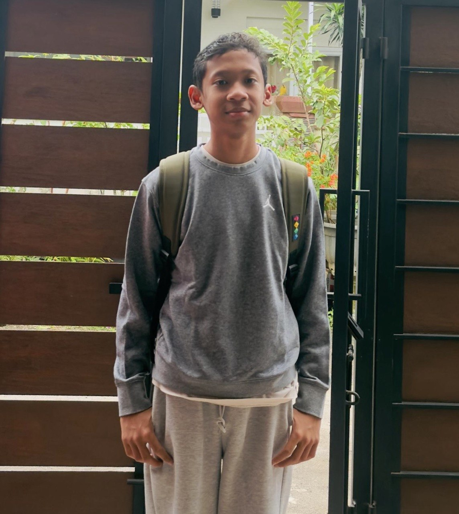

Karya Nyata dari Proses Belajar

Nama saya Noah Khedira Risnandar dari kelas 9 Al-Alaa dan saya sekarang sekolah di SMPIT Alharaki.
Nama saya Noah Khedira Risnandar dari kelas 9 Al-Alaa saya berumur 14 tahun dan saya memiliki hobi bermain sepak bola/futsal serta suka bermain game Pokemon. Keseharian saya diisi dengan sekolah dan les seperti les mengaji, bahasa Inggris, dan matematika. Saya bercita-cita menjadi dokter gigi karena saya tertarik dengan ilmu kedokteran dan gajinya juga bagus.
Saya memiliki hobi bermain futsal/sepak bola, bermain game, dan membaca buku komik. Saya juga memiliki baka dalm bermain bola di posisis pemain tengah bertahan.
Cita cita saya adalah untuk menjadi dokter gigi dan harapanya bisa menjadi dokter spesialis juga.
Saya sangat belajar di alki karena banyak kegiatan yang seru.